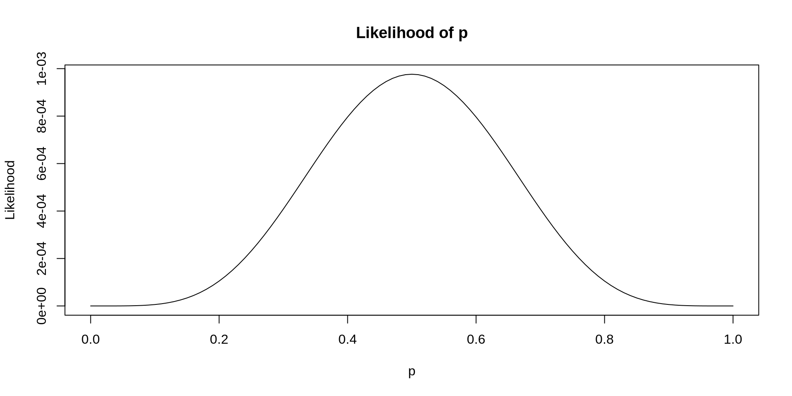
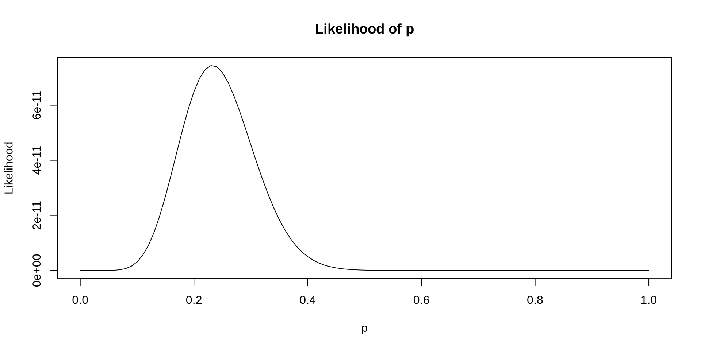
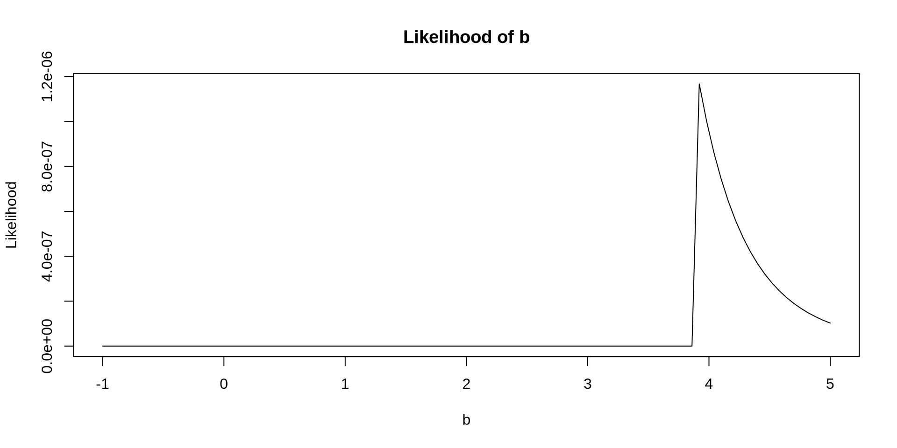
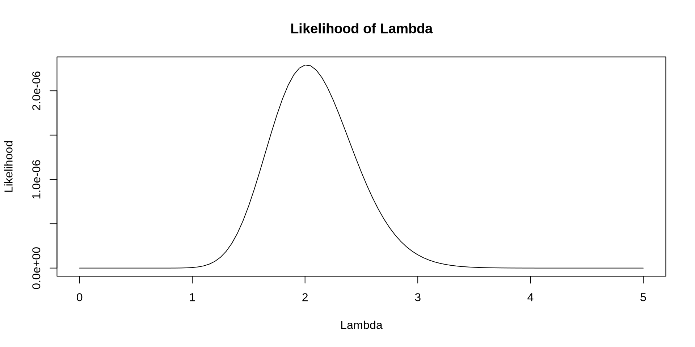
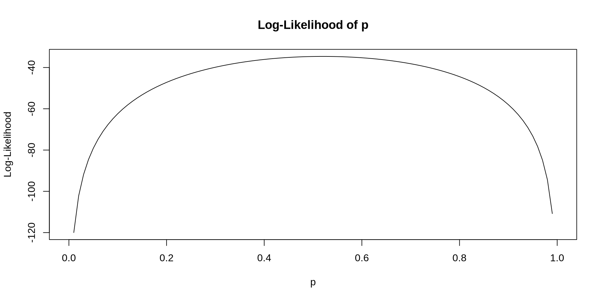
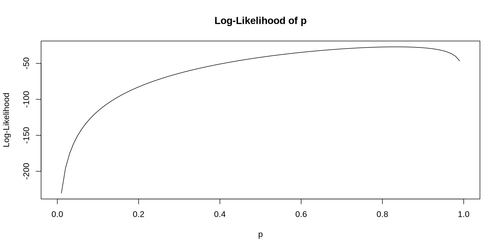
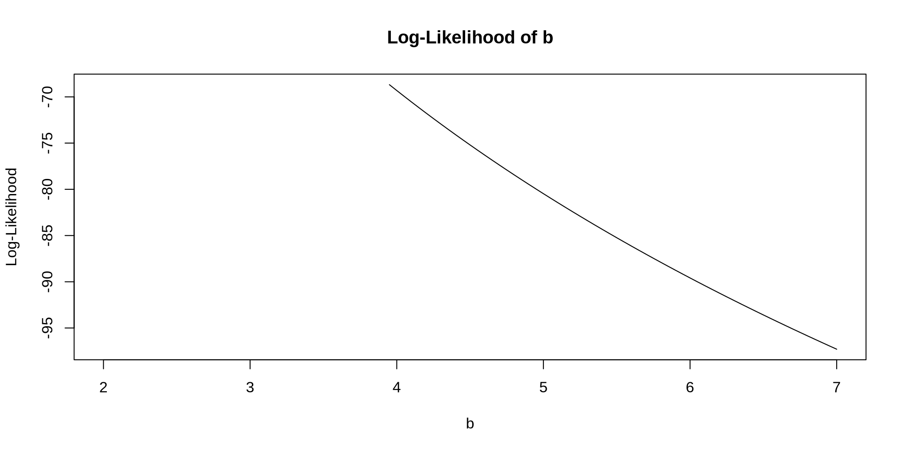

[1] 0 0 0 0 0[1] 0.32768[1] 0.32768Definition 20.1
Let \(\boldsymbol{X} = (X_1, X_2, \dots, X_n)\) be a random sample of independent and identically distributed discrete random variables with PMF \(P_X(x;\boldsymbol{\theta})\) where \(\boldsymbol{\theta} = (\theta_1, \theta_2, \dots, \theta_P)\) is a vector of model parameters. The joint PMF is:
\[ P(X_1 = x_1, X_2 = x_2, \dots, X_n = x_n; \boldsymbol{\theta}) = \prod_{i=1}^n P(X_i = x_i;\boldsymbol{\theta}) \]
or equivalently:
\[ P_{\boldsymbol{X}}(x_1, x_2, \dots, x_n; \boldsymbol{\theta}) = \prod_{i=1}^n P_X(x_i;\boldsymbol{\theta}) \]
If the random variables are continuous, each with PDF \(f_X(x;\boldsymbol{\theta})\), then the joint PDF is:
\[ f_{\boldsymbol{X}}(x_1, x_2, \dots, x_n; \boldsymbol{\theta}) = \prod_{i=1}^n f_X(x_i;\boldsymbol{\theta}) \]
Example 20.1
Let \(\boldsymbol{X} = (X_1, X_2, \dots, X_n)\) be independent and identically distributed Bernoulli random variables with success probability \(p\) where \(X_i\) represents a success or failure. Derive the joint PMF \(P_{\boldsymbol{X}}(x_1, x_2, \dots, x_n; p)\).
\[ \begin{align} P_{\boldsymbol{X}}(x_1, x_2, \dots, x_n; p) &= \prod_{i=1}^n P_X(x_i;p) \\ &= \prod_{i=1}^n p^{x_i}(1-p)^{1-x_i} \\ &= p^{\sum_{i=1}^n x_i} (1-p)^{n-\sum_{i=1}^n x_i} \end{align} \]
Example 20.2
Let \(\boldsymbol{X} = (X_1, X_2, \dots, X_n)\) be independent and identically distributed geometric random variables with success probability \(p\), where \(X_i\) represents the number of failures before the first success. Derive the joint PMF \(P_{\boldsymbol{X}}(x_1, x_2, \dots, x_n; p)\).
Example 20.3
Let \(\boldsymbol{X} = (X_1, X_2, \dots, X_n)\) be independent and identically distributed uniform random variables on the closed interval \([a, b]\). Derive the joint PDF \(f_{\boldsymbol{X}}(x_1, x_2, \dots, x_n; a, b)\).
\[ \begin{align} f_{\boldsymbol{X}}(x_1, x_2, \dots, x_n; a, b) &= \prod_{i=1}^{n} f_X(x_i; a, b) \\ &= \prod_{i=1}^{n} \frac{1}{b-a} 1[a < x_i < b] \\ &= \left(\frac{1}{b-a} \right)^n 1[a < x_{(1)}] 1[x_{(n)} < b] \end{align} \]
Example 20.4
Let \(\boldsymbol{X} = (X_1, X_2, \dots, X_n)\) be independent and identically distributed gamma random variables with shape parameter \(\alpha\) and rate parameter \(\lambda\). Derive the joint PDF \(f_{\boldsymbol{X}}(x_1, x_2, \dots, x_n; \alpha, \lambda)\).
Definition 20.2
Let \(\boldsymbol{X} = X_1, X_2, \dots, X_n\) be a random sample of independent and identically distributed discrete random variables with PMF \(P_X(x;\boldsymbol{\theta})\) where \(\boldsymbol{\theta} = (\theta_1, \theta_2, \dots, \theta_P)\) is a vector of model parameters. The likelihood function is:
\[ L(\boldsymbol{\theta};\boldsymbol{x}) = \prod_{i=1}^n P_X(x_i;\boldsymbol{\theta}) \]
If the random variables are continuous, each with PDF \(f_X(x;\boldsymbol{\theta})\), then the likelihood function is:
\[ L(\boldsymbol{\theta};\boldsymbol{x}) = \prod_{i=1}^n f_X(x_i;\boldsymbol{\theta}) \]
[1] 1 0 0 1 1 1 0 0 1 0
[1] 1 4 5 2 2 2 5 8 3 1
[1] 1.4310951 1.8229258 1.7816559 0.9803704 2.7774028 1.6489481 1.3109035
[8] 2.2902591 3.8679963 2.6471161
[1] 1.5139044 1.9178177 0.4189628 2.6054523 0.2399520 0.7711734 2.5138522
[8] 0.9791863 1.0378781 2.8933602
Definition 20.3
Let \(\boldsymbol{X} = X_1, X_2, \dots, X_n\) be a random sample of independent and identically distributed discrete random variables with PMF \(P_X(x;\boldsymbol{\theta})\) where \(\boldsymbol{\theta} = (\theta_1, \theta_2, \dots, \theta_P)\) is a parameter of model parameters. The log-likelihood function is:
\[ \ell(\boldsymbol{\theta};\boldsymbol{x}) = \sum_{i=1}^n \log\left( P_X(x_i;\boldsymbol{\theta}) \right) \]
If the random variables are continuous, each with PDF \(f_X(x;\boldsymbol{\theta})\), then the log-likelihood function is:
\[ \ell(\boldsymbol{\theta};\boldsymbol{x}) = \sum_{i=1}^n \log \left( f_X(x_i;\boldsymbol{\theta}) \right) \]
Example 20.5
Let \(\boldsymbol{X} = (X_1, X_2, \dots, X_n)\) be independent and identically distributed Bernoulli random variables with success probability \(p\) where \(X_i\) represents a success or failure. Derive the log-likelihood function \(\ell(p;\boldsymbol{x})\).
\[ \begin{align} \ell(p;\boldsymbol{x}) &= \log \left[ p^{\sum_{i=1}^n x_i} (1-p)^{n-\sum_{i=1}^n x_i} \right] \\ &= \log(p) \sum_{i=1}^n x_i + \log(1-p)\left(n - \sum_{i=1}^n x_i\right) \end{align} \]

Example 20.6
Let \(\boldsymbol{X} = (X_1, X_2, \dots, X_n)\) be independent and identically distributed geometric random variables with success probability \(p\) where \(X_i\) represents number of failures. Derive the log-likelihood function \(\ell(p;\boldsymbol{x})\).

Example 20.7
Let \(\boldsymbol{X} = (X_1, X_2, \dots, X_n)\) be independent and identically distributed uniform random variables on the set \((0, b)\). Derive the log-likelihood function \(\ell(b; \boldsymbol{x})\).
\[ \begin{align} \ell(b; \boldsymbol{x}) &= \left(\frac{1}{b} \right)^n 1[x_{(n)} < b] \\ &= -n \log(b) + \log(1[x_{(n)} < b]) \end{align} \]

Example 20.8
Let \(\boldsymbol{X} = (X_1, X_2, \dots, X_n)\) be independent and identically distributed gamma random variables with known shape parameter \(\alpha\) and unknown rate parameter \(\lambda\). Derive the log-likelihood function \(\ell(\lambda; \boldsymbol{x})\).
Definition 20.4
A maximum likelihood estimator (MLE) is the value of the parameter that maximizes the likelihood function or, equivalently, maximizes the log-likelihood function. Given a log-likelihood function \(\ell(\boldsymbol{\theta}; \boldsymbol{x})\), it is defined as:
\[ \hat{\boldsymbol{\theta}} = \arg \max_{\boldsymbol{\theta}} \ell(\boldsymbol{\theta}; \boldsymbol{x}) \]
Example 20.9
Let \(\boldsymbol{X} = (X_1, X_2, \dots, X_n)\) be independent and identically distributed Bernoulli random variables with success probability \(p\) where \(X_i\) represents a success or failure. Find the maximum likelihood estimator for \(p\).
\[ \begin{align} &\frac{d}{dp} \left[\log(p) \sum_{i=1}^n x_i + \log(1-p)\left(n - \sum_{i=1}^n x_i\right) \right] = 0 \\ &\Rightarrow \frac{\sum_{i=1}^n x_i}{p} = \frac{n-\sum_{i=1}^n x_i}{1-p} \\ &\Rightarrow \sum_{i=1}^n x_i - p\sum_{i=1}^n x_i = np - p\sum_{i=1}^n x_i \\ &\Rightarrow \sum_{i=1}^n x_i = np \\ &\Rightarrow \hat{p} = \frac{\sum_{i=1}^n x_i}{n} \end{align} \]
Example 20.10
Let \(\boldsymbol{X} = (X_1, X_2, \dots, X_n)\) be independent and identically distributed geometric random variables with success probability \(p\) where \(X_i\) represents number of failures. Find the maximum likelihood estimator for \(p\).
\[ \begin{align} & \frac{d}{dp} \left[ n \log(p) + \log(1-p)\sum_{i=1}^n x_i\right] = 0 \\ &\Rightarrow \frac{n}{p} - \frac{\sum_{i=1}^n x_i}{1-p} = 0 \\ &\Rightarrow \frac{n}{p} = \frac{\sum_{i=1}^n x_i}{1-p} \\ &\Rightarrow n = p \sum_{i=1}^n x_i + np \\ &\Rightarrow \hat{p} = \frac{n}{\sum_{i=1}^n x_i + n} = \frac{1}{1+\bar{x}} \end{align} \]
Example 20.11
Let \(\boldsymbol{X} = (X_1, X_2, \dots, X_n)\) be independent and identically distributed gamma random variables with known shape parameter \(\alpha\) and unknown rate parameter \(\lambda\). Find the maximum likelihood estimator for \(\lambda\).
YOUR ANSWER HERE
Example 20.12
Let \(\boldsymbol{X} = (X_1, X_2, \dots, X_n)\) be independent and identically distributed Bernoulli random variables with success probability \(p\) where \(X_i\) represents a success or failure. Use the optimize function to find the maximum likelihood estimator for \(p\) for the observed data below:
Example 20.13
Let \(\boldsymbol{X} = (X_1, X_2, \dots, X_n)\) be independent and identically distributed geometric random variables with success probability \(p\) where \(X_i\) represents number of failures. Use the optimize function to find the maximum likelihood estimator for \(p\) for the observed data below:
Example 20.14
Let \(\boldsymbol{X} = (X_1, X_2, \dots, X_n)\) be independent and identically distributed uniform random variables on the set \((0, b)\). Derive the log-likelihood function \(\ell(b; \boldsymbol{x})\). Use the optimize function to find the maximum likelihood estimator for \(b\) for the observed data below:
Example 20.15
Let \(\boldsymbol{X} = (X_1, X_2, \dots, X_n)\) be independent and identically distributed gamma random variables with known shape parameter \(\alpha\) and unknown rate parameter \(\lambda\). Use the optimize function to find the maximum likelihood estimator for \(b\) for the observed data below: